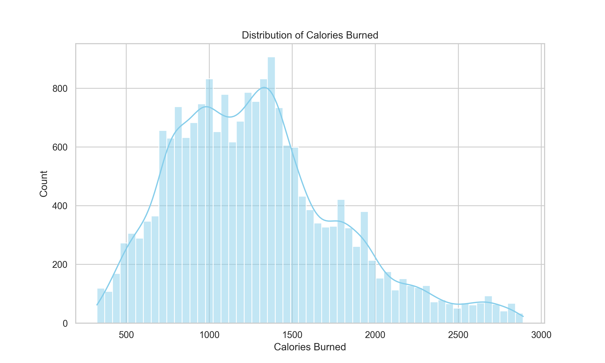
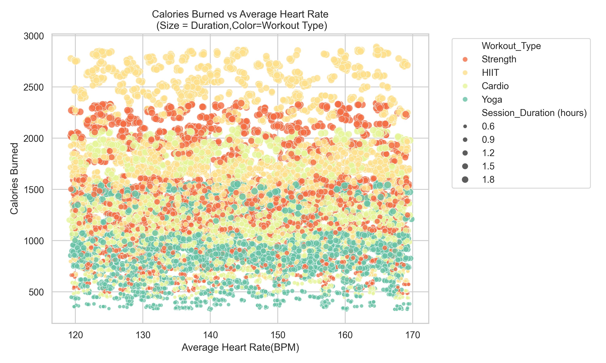
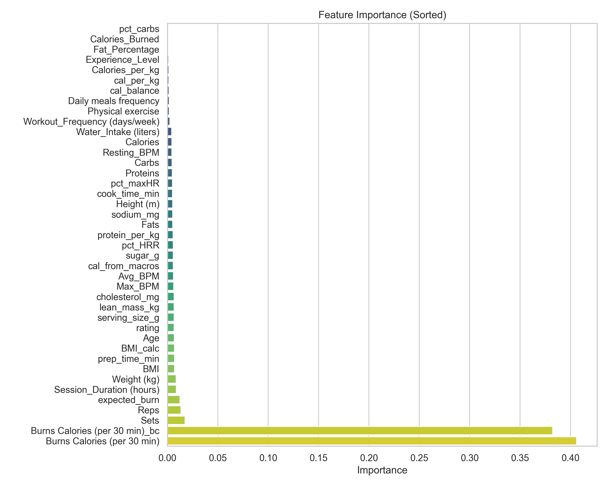

Calories Burn Analysis
Project Overview
- Explores fitness data to analyze how workout types, gender, body metrics, and heart rate influence calories burned.
- Uses visualization and machine learning to reveal key patterns affecting calorie expenditure.
- Includes both regression (predicting calories) and classification (categorizing burn levels).
Objectives
- Understand relationships between workout parameters and calorie burn.
- Visualize calorie distribution, workout comparison, and gender-based trends.
- Generate correlation heatmaps to identify numeric dependencies.
- Build:
- Random Forest Regressor for calorie prediction.
- Random Forest Classifier for calorie burn categorization.
- Identify key predictors using feature importance analysis.
Technologies Used
- Python
- Pandas, NumPy — Data cleaning & manipulation
- Matplotlib, Seaborn — Visualization
- Scikit-learn — Modeling & evaluation
Key Visualizations
Distribution of Calories Burned
Calories Burned by Workout Type

Calories Burned vs Average BPM
Feature Importance Plot
Model Metrics & Interpretation
Algorithm: Random Forest Regressor
Workflow: 80/20 train-test split (random_state=42), trained and evaluated using R² and MAE.
R² Score
MAE

Algorithm: Random Forest Classifier
Workflow: Classified sessions into “High” / “Low” calorie burns. Evaluated using precision, recall, and F1-score.
| Class | Precision | Recall | F1-score | Support |
|---|---|---|---|---|
| High | 1.00 | 1.00 | 1.00 | 998 |
| Low | 1.00 | 1.00 | 1.00 | 994 |
| Medium | 1.00 | 1.00 | 1.00 | 970 |
| Very High | 1.00 | 1.00 | 1.00 | 1038 |
| Accuracy | 1.00 | 4000 | ||
| Macro Avg | 1.00 | 1.00 | 1.00 | 4000 |
| Weighted Avg | 1.00 | 1.00 | 1.00 | 4000 |